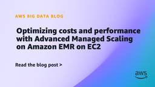

AWS Big Data Blog
フィード

Amazon OpenSearch Service extends version lifecycle support timelines
AWS Big Data Blog
In November 2024, we announced Standard and Extended Support dates for legacy Elasticsearch and OpenSearch versions on Amazon OpenSearch Service. We are extending security and operating system patch coverage for these versions by 12 months, through November 7, 2027, and announcing support dates for additional Elasticsearch and OpenSearch versions.
1日前

Scaling fine-grained access control for enterprise lakehouse using SageMaker Unified Studio and AWS Lake Formation 1
1
AWS Big Data Blog
As enterprise lakehouses grow to thousands of tables across business domains and regions, fine-grained access control becomes a governance bottleneck. This post shows how to combine AWS IAM Identity Center, AWS Lake Formation tag-based access control, and trusted identity propagation in Amazon SageMaker Unified Studio for automated, auditable, least-privilege access.
2日前

Event-driven pipeline orchestration with Amazon MWAA and Airflow 3.0 1
AWS Big Data Blog
Data engineering teams running Apache Airflow across multiple AWS accounts have no built-in way to coordinate workflows between separate Amazon MWAA environments. With Airflow 3.0 on Amazon MWAA, you can use asset-based scheduling and Asset Watchers with Amazon SQS to build event-driven, cross-account orchestration that replaces polling with near real-time triggers.
2日前

Transforming search at Delivery Hero: A migration journey to OpenSearch Service with radial search 1
AWS Big Data Blog
In this post, we walk through how Delivery Hero migrated their semantic search infrastructure to Amazon OpenSearch Service, why they chose radial search over traditional k-nearest neighbor (k-NN) search, and the optimizations that made the system fast, cost-effective, and flexible for experimentation.
4日前

Amazon Redshift multi-Region disaster recovery 1
AWS Big Data Blog
In this post, we walk through the core concepts of cross-Region disaster recovery, introduce a framework for assessing your requirements, and then dive deep into three primary DR strategies for Amazon Redshift: Active-Passive, Active-Active, and a Hybrid approach. For each strategy, we cover architecture, trade-offs, implementation guidance, and cost considerations so you can make an informed decision for your workload.
5日前

Streamline Apache Kafka cluster operations and migrations with Agent Skills for Amazon MSK 1
AWS Big Data Blog
Agent Skills for Amazon MSK bring broker-type-aware expertise to operating and migrating Apache Kafka clusters. In this post, we walk through installing the managing-amazon-msk and migrate-to-msk skills and demonstrate how they diagnose performance issues, size clusters with cost breakdowns, and plan migrations from self-managed Kafka to Amazon MSK.
5日前

Introducing Apache Spark troubleshooting agent for Amazon EMR on EKS 1
AWS Big Data Blog
In this post, we show you how to set up the agent for Amazon EMR on EKS and walk through troubleshooting a failed job run. We demonstrate the workflow from both the Amazon EMR console and an AI assistant that supports the Model Context Protocol (MCP), an open standard for connecting AI assistants to external tools and data.
5日前

Upgrade Amazon Redshift DC2 clusters to the new Amazon Redshift RG 1
AWS Big Data Blog
Upgrading your Amazon Redshift DC2 clusters to AWS Graviton-based RG instances unlocks managed storage, data sharing, zero-ETL, and an integrated data lake engine. This post covers the new features, node-mapping guidance for sizing, the available upgrade methods, and how to validate your target configuration with Amazon Redshift Test Drive.
5日前

Optimizing costs and performance with Advanced Managed Scaling on Amazon EMR on EC2 1
AWS Big Data Blog
In this post, we discuss the benefits of Advanced Scaling for Amazon EMR on Amazon EC2 and demonstrate how it works through some example scenarios. You'll learn when to prioritize utilization optimized settings for cost savings with conservative scaling, balanced approaches for mixed workloads, or performance optimized configurations for SLA-sensitive jobs requiring aggressive scaling.
8日前

Deliver Apache Kafka data to streaming tables for Apache Iceberg with Amazon MSK Express brokers
AWS Big Data Blog
Announcing delivery to streaming tables on Apache Iceberg for Amazon MSK Express brokers, a fully managed capability that continuously materializes your Kafka streaming data as queryable Iceberg tables on Amazon S3 Tables. No connectors, Flink jobs, or custom consumers to manage, and no code to write.
9日前
Lowering AWS KMS decrypt API costs in EMR Spark jobs
AWS Big Data Blog
Processing encrypted data in Amazon S3 with Amazon EMR and Apache Spark can drive up AWS KMS decrypt API costs as the number of objects grows. This post shows three techniques to reduce those costs without compromising encryption: optimizing file formats (including Apache Iceberg), aggregating data, and using AWS Glue Data Catalog partition indexes.
9日前
Accelerate Spark on EMR Serverless with larger workers and shuffle-optimized disks
AWS Big Data Blog
Amazon EMR Serverless now supports a 32 vCPU / 244 GB worker configuration for the most demanding Spark jobs. Across 126 TPC-DS and TPC-H queries, larger workers delivered an average 29% faster query execution and 29% lower cost, with the biggest gains on shuffle-heavy, multi-table join queries.
10日前
Automate Spark Scala migration to 4.x with AWS Spark Upgrade Agent
AWS Big Data Blog
Learn how to automate Apache Spark 3.x to 4.0 Scala migration on Amazon EMR using the AWS Spark Upgrade Agent. This post covers API deprecations, behavioral changes, build configuration updates, and job validation, turning months of manual effort into hours.
11日前
Build a contract compliance search system with Amazon OpenSearch
AWS Big Data Blog
In this post, you build a contract compliance search system that combines semantic search with semantic highlighting in Amazon OpenSearch Service. You deploy the solution using two AWS CloudFormation stacks, test it with synthetic contract documents, and see how a single query surfaces both the right contracts and the right clauses within them.
11日前
Building a scalable personalized recommendation system on AWS: From batch to real-time
AWS Big Data Blog
Learn how the Everyday Essentials team built a scalable personalized recommendation platform on AWS using a batch-first architecture with Amazon MWAA for orchestration, Amazon SageMaker for training and vector search, and AWS Lake Formation for governed data access, then extended it to real-time with Amazon MemoryDB.
12日前
Automate creating AWS Glue Data Catalog views with AWS SDK for data mesh use case
AWS Big Data Blog
This post shows you how to use the Catalog objects API CreateTable() to programmatically create ATHENA and SPARK dialects using cross-account IAM definer roles, and how to add the ATHENA dialect programmatically for the views that were created earlier with only SPARK dialect.
15日前
Efficient log management with Amazon OpenSearch Service data streams
AWS Big Data Blog
In this post, we show you how to implement data streams with Index State Management (ISM) in Amazon OpenSearch Service. This approach automatically manages your time series data lifecycle and optimizes both performance and costs. Data streams distribute incoming data across multiple backing indices, helping to reduce single-index bottlenecks, while ISM policies automate rollover, retention, and storage tiering to help manage costs.
16日前
How Alight Solutions achieved 55% cost savings with Amazon OpenSearch Service
AWS Big Data Blog
In this post, we share how Alight Solutions migrated from self-managed Elasticsearch to Amazon OpenSearch Service. The migration achieved a 55% cost reduction, alleviated approximately 2,000 hours per year of operational overhead, and gave Alight access to advanced observability features they could not prioritize before.
19日前
Govern Amazon Redshift Data Warehouses Data Across Accounts using Amazon SageMaker Unified Studio
AWS Big Data Blog
In this post, we show you how to use Amazon SageMaker Unified Studio to implement cross-account data sharing in Amazon Redshift using data mesh principles. We demonstrate how to build a scalable data mesh architecture that supports secure, auditable data sharing across AWS accounts while reducing operational burden.
19日前
Migrate from Apache Solr to Amazon OpenSearch Serverless
AWS Big Data Blog
In this post, you will learn why now is the time to take advantage of the ease of operations and native AI capabilities of OpenSearch Serverless, and migrate from Solr.
23日前